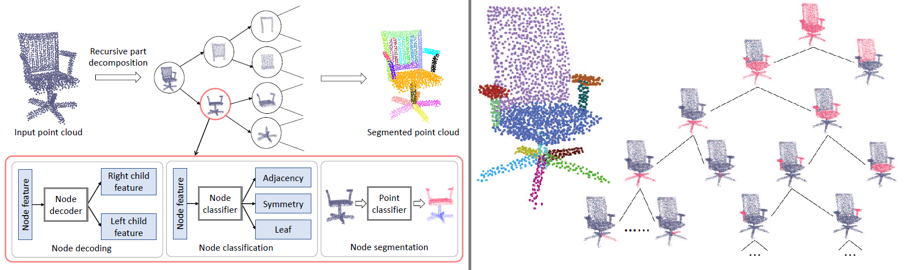
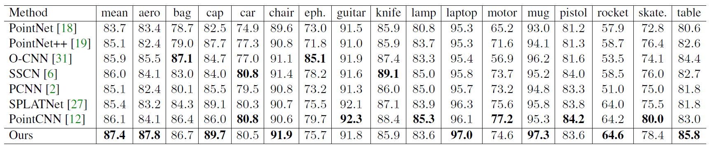

|
PartNet: A Recursive Part Decomposition Network for Fine-grained and
Hierarchical Shape Segmentation
Fenggen Yu1, Kun Liu1,
Yan Zhang1, Chenyang Zhu2, Kai Xu2
1Nanjing University, 2National University of Defense Technology
(Fenggen and Kun are joint first authors; Kai is corresponding author.)
CVPR 2019

Abstract: Deep learning approaches to 3D shape segmentation are
typically formulated as a multi-class labeling problem. Existing
models are trained for a fixed set of labels, which
greatly limits their flexibility and adaptivity. We opt for topdown
recursive decomposition and develop the first deep
learning model for hierarchical segmentation of 3D shapes,
based on recursive neural networks. Starting from a full
shape represented as a point cloud, our model performs
recursive binary decomposition, where the decomposition
network at all nodes in the hierarchy share weights. At each
node, a node classifier is trained to determine the type (adjacency
or symmetry) and stopping criteria of its decomposition.
The features extracted in higher level nodes are
recursively propagated to lower level ones. Thus, the meaningful
decompositions in higher levels provide strong contextual
cues constraining the segmentations in lower levels.
Meanwhile, to increase the segmentation accuracy at each
node, we enhance the recursive contextual feature with the
shape feature extracted for the corresponding part. Our
method segments a 3D shape in point cloud into an unfixed
number of parts, depending on the shape complexity, showing
strong generality and flexibility. It achieves the stateof-
the-art performance, both for fine-grained and semantic
segmentation, on the public benchmark and a new benchmark
of fine-grained segmentation proposed in this work.
We also demonstrate its application for fine-grained part
refinements in image-to-shape reconstruction.

Although PartNet is designed for fine-grained segmentation,
the recursive decomposition should work even better
for semantic segmentation since the latter is usually a
much coarser-level segmentation. Comparison of semantic segmentation on the ShapeNet part dataset (Metric is part-wise IoU (%)). For semantic segmentation, PartNet can be trained with
a consistent hierarchy for all shapes in a category. The
training is can be done with any hierarchy that is consistent
across all training shapes. Therefore, we do not need
an extra process for hierarchy construction. Taking any random
hierarchy of one training shape as a “template”, we
unify the hierarchies of all the other shapes based on the semantic
part labels. Therefore, PartNet does not require an
extra supervision of part hierarchy for training for semantic
segmentation.
| Bibtex |
@inproceedings{yu2019partnet,
title = {PartNet: A Recursive Part Decomposition Network for Fine-grained and
Hierarchical Shape Segmentation},
author = {Fenggen Yu and Kun Liu and Yan Zhang and Chenyang Zhu and Kai Xu},
booktitle
= {CVPR},
pages
= {to appear},
year
= {2019}
} |
|
|
|